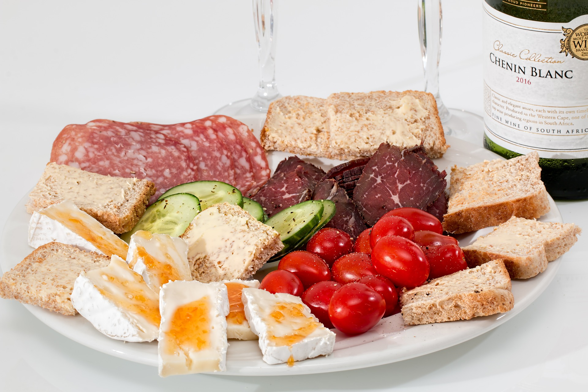
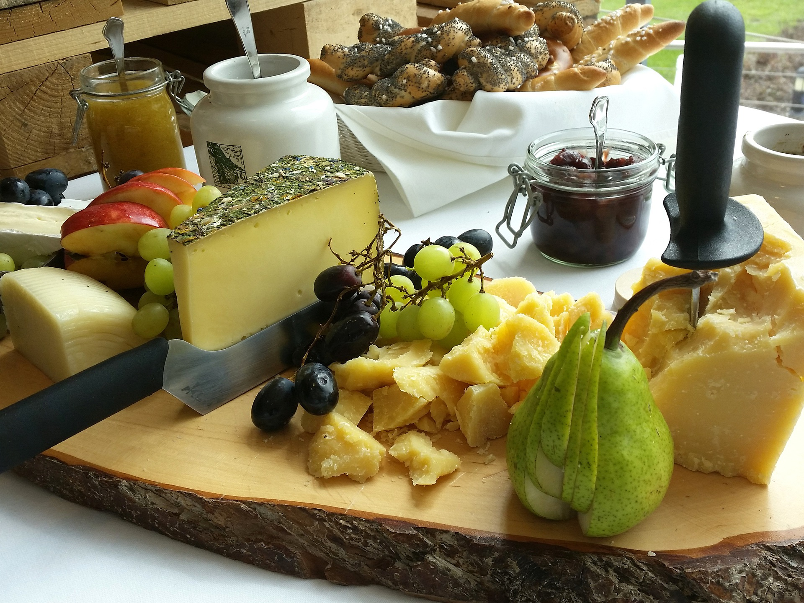
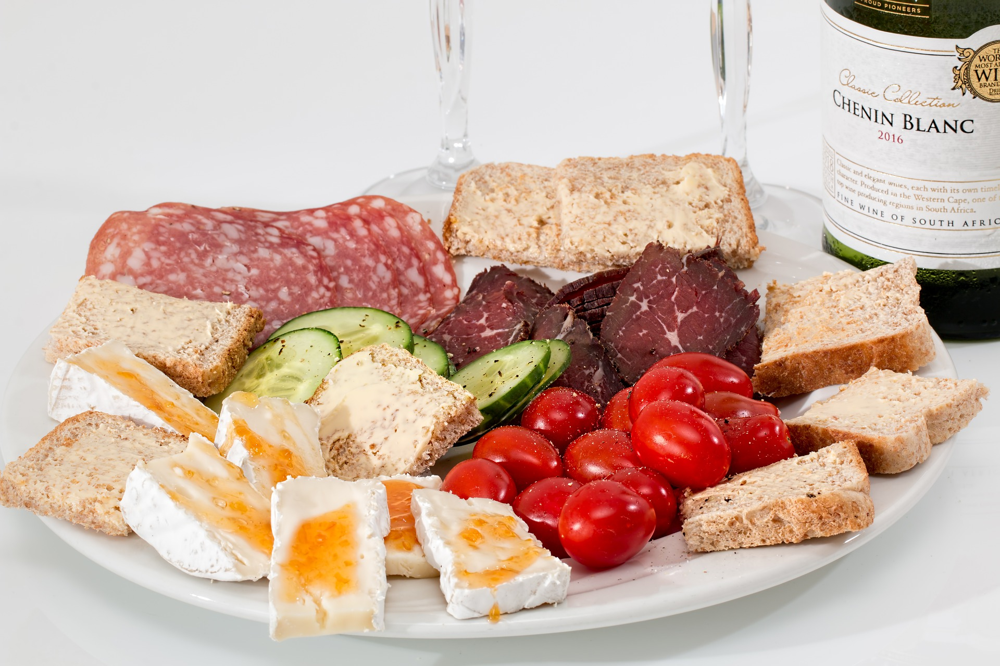
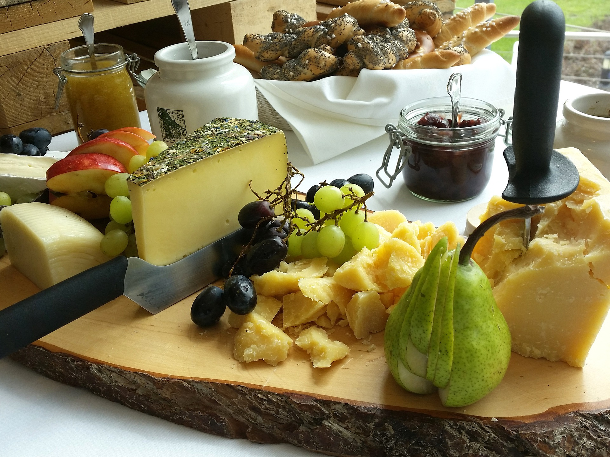

Fresh out of the oven
You found yourself roaming in when usthe street of Paris and enter a bakery. The baker just finished a fresh load of croissants and pains au chocolat. Standing next to him, you can smell the aroms of their work, hear the flakes crisp.

 


